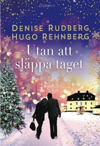

| Startsida | Utan att släppa taget | El chico de las estrellas | Kontakta mig |
 |
Utan att släppa taget Författare Denise Rudberg & Hugo Rehnberg Synopsis Agnes ska för första gången sedan skilsmässan fira jul utan sin älskade dotter. Efter viss vånda och delvis lockad av en gammal ungdomskärlek som hon aldrig lyckats komma över bestämmer hon sig för att tacka ja till ett julfirande med det gamla kompisgänget från gymnasiet. Att Simon ska få en fridfull högtid verkar inte särskilt troligt. Hans flickvän är dödstrött på honom, försöket att skapa nästa stora IT-succé verkar kapsejsa och till råga på allt har han lånat en stor summa pengar av helt fel person. Väl förborgade hemligheter stiger till ytan, gamla konflikter blossar upp och en oväntad gäst väcker minnet av en 20 år gammal tragedi, vilket gör julhelgen mer känslosam än någon väntat sig. Men vännerna upptäcker också hur mycket de saknat den innerliga gemenskap de en gång delade. Varför rekommenderar jag den? ♥♥ För den pasar när som hälst att läsa och inte bara under juletiden. Och så var det så intressant hur allting i melllan de gamla kompiserna från gymnasiet. För att vara ärlig, är det lite svårt att berätta varför jag reckomenderar den till dig. Historien i boken var helt enkelt jättebra, och egentligen är jag jätte kräsen av mig när jag läser böcker. |
Jag hade förkortat lite på synopsisen av boken. Så om du vill läsa hela synopsisen kan du fälja den här länken, här➤